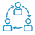

Redes Sociais Privadas
Uma comunidade só sua
Redes sociais privadas são plataformas de interação online que reúnem pessoas que tem atividades comuns, ideal para empresas e escolas.
Algumas vantagens da rede social privada da Intercode são:
- Privacidade: um ambiente confiável e seguro em que seus usuários possam se comunicar e colaborar
- Reconhecimento da marca: onde você pode construir a confiança e fortalecer a cultura da empresa ou escola
- Propriedade dos dados: As informações trafegam criptografadas e são armazenadas nos servidores seguros da Intercode
- Gestão do conhecimento integrado: um lugar para manter um registro de conversas, decisões, arquivos, etc
- Comunicação com usuários: A capacidade para todos os usuários para dar um feedback direto, o que mostra que suas opiniões são bem-vindas e valorizadas
- Agrupamento: Usuários podem ser pré-agrupados, em turmas escolares ou departamentos de uma empresa.
Essas são algumas das funcionalidades:
SISTEMA DE “CURTIR” E COMENTÁRIOS
GALERIA DE VÍDEOS
GERENCIAMENTO DE “AMIGOS”
MENSAGENS PRIVADAS
CHAT PRIVADO ENTRE USUÁRIOS
ÚLTIMAS ATIVIDADES
SISTEMA DE PONTUAÇÃO DE USUÁRIOS
GALERIA DE FOTOS
CALENDÁRIO
PRIVACIDADE
GERENCIAMENTO DE EVENTOS
 GRUPOS DE USUÁRIOS